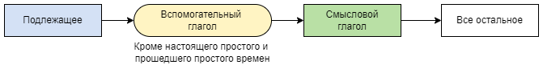
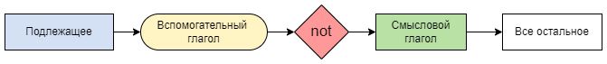
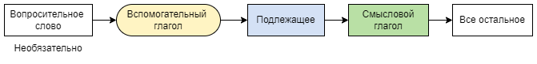

HomeIndex
HomeIndex GitHub
</>
GitHub
</>
Построение предложений
В английском языке предложения строятся по строго фиксированным схемам, которые представлены ниже. Элементы этих схем, такие как вспомогательные глаголы и формы смысловых глаголов, для разных времен различны, однако общие схемы одинаковы для всех времен.

I love my cat. It is raining outside.
В первом предложении вспомогательного глагола нет, т.к. это настоящее простое время. Во втором
предложении вспомогательный глагол — is.
Note
Использование конкретных вспомогательных глаголов будет рассмотрено при рассмотрении соответствующих времен.

We did not talk yesterday — мы не разговаривали вчера.

Вопросительные слова см. здесь.
Why does my heart feel so bad? — Почему мое сердце чувствует себя так плохо? (с вопросительным словом)
Have you ever seen the rain? — Ты когда-нибудь видел дождь? (без вопросительного слова; наречие ever в данной позиции нарушает представленную выше схему, однако это является характерным для настоящего совершенного времени, и это следует воспринимать как исключение).
Note
Когда вопрос относится к подлежащему, то порядок слов такой же, как в утвердительном предложении.
Who do you love? — Кого ты любишь? (Вопрос относится к дополнению — "кого").
Who loves you? — Кто любит тебя? (Вопрос относится к подлежащему — "кто"). Who love you? — Кто любит тебя? (Предполагается несколько субъектов).
Who will you visit tomorrow? — К кому ты пойдешь завтра? (Кого ты посетишь завтра?)
Who will visit you tomorrow? — Кто к тебе придет завтра? (Кто посетит тебя завтра?)
| Время | Simple Простое | Continuous Продолженное | Perfect Совершенное | Perfect Continuous Совершенно-продолженное |
|---|---|---|---|---|
| Настоящее Present | Present Simple | Present Continuous | Present Perfect | Present Perfect Continuous |
| Прошедшее Past | Past Simple | Past Continuous | Past Perfect | Past Perfect Continuous |
| Будущее Future | Future Simple | Future Continuous | Future Perfect |
Простым временем (Present Simple Tense) мы обозначаем регулярные, повседневные действия.
Утвердительное предложение
Нужно взять английский глагол без частицы to, либо же добавить к нему окончание -s/es для 3-го лица единственного числа, т.е. он, она, оно – he, she, it; и поставить его после субъекта (того, кто исполняет действие). В утвердительной форме вспомогательный глагол to do не используется.
Note
На самом деле глагол to do может использоваться в утвердительных предложениях, однако его использование имеет особый смысл — усиление утверждения. Например:
Why don't you eat meat? — Why do you think so?! I do eat meat!
Почему ты не ешь мясо? — Почему ты так думаешь?! Я ем мясо!
I drink coffee every day.
My cat sleeps a lot.
Маркерами для этого времени являются временные выражения:
He usually comes home late — Обычно он приходит домой поздно.
Pigs never fly — Свиньи никогда не летают.
Отрицательное предложение
Вспомогательный глагол to do используется.
It usually doesn't snow in summer. — Обычно снег летом не идет.
I don't do exercises every day. — Я не делаю упражнения каждый день (здесь глагол to do также
является и смысловым).
Вопросительное предложение
Dos he drink coffee with sugar? — Он пьет кофе с сахаром?
How long do you usually take a shower? — Как долго ты принимаешь душ?
Why don't you like this picture? — почему тебе не нравится эта картина? (Это предложение,
наверное, можно назвать вопросительно-отрицательным).
Действия во времени Present Continuous совершаются в данный момент, т.е. момент говорения. Вспомогательным глаголом является глагол to be в соответствующей форме. К смысловому глаголу добавляется окончание ing.
Маркерами для этого времени являются временные выражения:
Утвердительное предложение
Right now I'm washing my cat. — Прямо сейчас я мою своего кота.
Ouch! He is scratching! — Ой! Он царапается!
Отрицательное предложение
No, I'm not driving, so I can talk to you. — Нет, я не веду машину, поэтому могу говорить с тобой.
Вопросительное предложение
Are they enjoying the play? — Они получают удовольствие от пьесы?
What is he doing now? — Что он делает сейчас?
Present Perfect Tense — настоящее совершенное время — обозначает действие, которое началось в прошлом и завершилось к настоящему моменту. В английском языке глагол в Present Perfect воспринимается в настоящем времени, а не в прошлом, так как привязан к настоящему результатом. Вспомогательным глаголом является глагол to have в соответствующей форме have/has. Смысловой глагол ставится в 3-ю форму (для правильных глаголов + ed).
Маркерами для этого времени являются временные выражения:
Утвердительное предложение
I've already had my dinner. — Я уже поужинала.
(В этом предложении глагол to have является и вспомогательным, и смысловым.)
My cat has already scratched all the wallpaper in the room. — Мой кот уже пошкрябал все обои в комнате.
Отрицательное предложение
They haven't yet finished their vacation. — Они еще не закончили их отпуск.
I've never seen you so happy. — Я никогда не видел тебя таким счастливым.
Формально данное предложение является утвердительным, однако отрицательный временной маркер never делает его отрицательным по смыслу.
Вопросительное предложение
Have you ever eaten fried frogs? — Ты когда нибудь ел жаренных лягушек?
Have you ever fried frogs? — Ты когда нибудь жарил лягушек?
— Yes I have/No I have not.
Have you cleaned your room? — Ты убрал свою комнату?
What have you just bought? — Что ты только что купил?
I've just bought a bottle of water. — Я только что купил бутылку воды.
I've bought just a bottle of water. — Ты купил всего лишь бутылку воды.
I've just bought just a bottle of water. — Ты только что купил всего лишь бутылку воды.
Present Perfect Continuous Tense, или настоящее совершенное длительное время в английском языке относится к незавершенным действиям, которые начались в прошлом и продолжают выполняться на момент говорения. Не используется с глаголами состояния, такими как: to hate (ненавидеть), to know (знать), to understand (понимать). Вместо него используют Present Perfect.
Вспомогательным глаголом является глагол to be в форме Present Perfect — have/has been. К смысловому глаголу добавляется окончание ing.
Маркерами для этого времени являются временные выражения:
Утвердительное предложение
George has been teaching in this school for three years. — Джордж преподает в этой школе три года.
We have been living here since last year. — Мы тут живем с прошлого года.
Отрицательное предложение
My grandma hasn't been visiting us since March. — Моя бабушка не навещала нас с марта.
You haven't been attending your lectures since last month. — Ты не посещал лекции с прошлого месяца.
Вопросительное предложение
Has it been raining? — На улице шел дождь?
— Yes, it has/No, it has not.
Have you been trying to call her? — Ты пытаешься ей позвонить?
— Yes, you have/No, you have not.
How long have you already been staying in Moscow? — Как долго ты уже в Москве?
Why have you been so busy recently? — Почему ты так занят в последнее время?
(Глагол состояния "to be busy" — используем Present Perfect.)
Past Simple (простое прошедшее время) — одно из самых распространенных времен в английском языке. С помощью Past Simple мы можем передать события, происходившие в прошлом. Вспомогательным глаголом является глагол to do в прошедшем времени, т.е. did. Смысловой глагол ставится во 2-ю форму (для правильных глаголов + ed). В утвердительных предложениях вспомогательный глагол не используется. В отрицательных и вопросительных предложениях смысловой глагол используется в 1-ой форме.
Note
На самом деле, как и в настоящем времени, глагол to do (в форме did) может использоваться в утвердительных предложениях, однако его использование, также точно, имеет особый смысл — усиление утверждения. Например:
Why didn't you eat meat a year ago? — Why do you think so?! I did eat meat a year ago!
Почему ты не ела мясо год назад? — Почему ты так думаешь?! Я ела мясо год назад!
Маркерами для этого времени являются временные выражения:
Утвердительное предложение
A year ago on weekends we often went shopping. — Год назад по выходным мы часто ходили за покупками.
I smiled at him and he smiled back at me. — Я улыбнулась ему, а он улыбнулся мне в ответ.
Yesterday all my troubles seemed so far away. — Вчера все проблемы казались такими далекими.
I did this a lot of times. — Я делал это множество раз.
I never did it before. — Я никогда не делал этого раньше.
Отрицательное предложение
I didn't sleep well last night. — Я не хорошо спал прошлой ночью.
He didn't do it before. — Он не делал этого раньше.
Вопросительное предложение
Did he tell you about his plans? — Он рассказал тебе о своих планах?
— Yes he did/No he didn't.
Why did she have to go? — Почему она должна была уйти?
Did you do your exercises yesterday? — Ты делал зарядку вчера?
— Yes I did/No I didn't.
Past Continuous (прошедшее продолженное время) обозначает длительное действие, действие в процессе. Все, что мы знаем о нем — это то, что оно происходило в какой-то момент. Вспомогательным глаголом является глагол to be в прошедшем времени, т.е. was или were. К смысловому глаголу добавляется окончание ing.
Маркерами для этого времени являются временные выражения:
Утвердительное предложение
Yesterday at 7pm I was watching a movie. — Вчера в 7 часов я смотрела фильм.
I was working at 6pm — Я работал в шесть часов вечера.
We were reading. — Мы читали.
My cat was sleeping when I came home. — Мой кот спал, когда я пришла домой.
Отрицательное предложение
When the alarm clock rang, I was not sleeping already. — Когда будильник зазвонил, я уже не спала.
I was not working. — Я не работал.
We were not reading. — Мы не читали.
I wasn't driving when you called. — Я не вела машину, когда ты позвонил.
Вопросительное предложение
What were you doing yesterday at 7pm? — Что ты делала вчера в 7 часов вечера?
What was the elephant doing when Napoleon came? — Что делал слон, когда пришел Наполеон?
Were you watching TV when I called? — Ты смотрел телевизор, когда я звонил?
Время Past Perfect обозначает действие, которое завершилось до определенного момента в прошлом. Еще его можно назвать "предпрошедшее" время. Вспомогательным глаголом является глагол to have в прошедшем времени, т.е. had. Смысловой глагол используется в третьей форме.
Утвердительное предложение
My old phone had broken before I bought the new one. — Мой старый телефон сломался до того, как я купил новый.
Students had done homework before the class started. — Студенты сделали домашнюю работу до того, как урок начался.
Отрицательное предложение
I had not called my mom, so she called me ten times. — Я не звонил маме, поэтому она позвонила мне десять раз. Bob had not talked much before he met Mary. — Боб не говорил много до того, как встретил Мэри.
Вопросительное предложение
Had he ever studied Russian before he moved to Moscow? — Он учил русский перед тем, как переехал в Москву?
Чтобы образовать простое будущее время (Future Simple), нужно поставить вспомогательный глагол will перед инфинитивом (первой формой) основного смыслового глагола (без частицы "to"). К смысловым глаголам в 3 лице, ед.ч. окончание s не добавляется.
Маркерами для этого времени являются временные выражения:
Утвердительное предложение
I will open the window. — Я открою окно.
You'll go to London in seven days. — Ты отправишься в Лондон через 7 дней.
He will play football. — Он будет играть в футбол.
I think she will finish this game only after she dies :( — Я думаю, она закончит эту игру, только когда умрет :(
We will be at school tomorrow. — Мы будем завтра в школе.
Next year I will give you all my toys. — В следующем году я отдам тебе все мои игрушки.
Отрицательное предложение
Отрицательные предложения образуются путем добавления частицы will not.
I will not open the window. — Я не открою окно.
You will not go to London. — Ты не отправишься в Лондон.
He won't play football. — Он не будет играть в футбол.
She will not stop playing games until it's dark. — Она не закончит играть в игры пока не стемнеет.
We will not be at school tomorrow. — Мы не будем завтра в школе.
Также можно использовать сокращенную форму won't.
I won't open. — Я не открою.
He won't play. — Он не будет играть.
Вопросительное предложение
Will I visit her? — Я навещу ее?
Will you help me? — Ты поможешь мне?
Will he go to school? — Он пойдет в школу?
Where will I play? — Где я буду играть?
Why will he play? — Почему он будет играть?
Will long study give us good English speaking? — Точно ли долгое обучение позволит нам хорошо говорить по английский?
Future Continuous — будущее продолженное время употребляется для выражения длительного действия,
которое будет происходить в определенный момент в будущем (ближайшем или отдаленном).
Вспомогательным глаголом является глагол to be в будущем времени — will be.
К смысловому глаголу добавляется окончание ing.
Маркерами для этого времени являются временные выражения:
Утвердительное предложение
I will be having rest the whole evening. — Я буду отдыхать завтра целый вечер.
They will be swimming in a pool from 3 till 5pm — Они будут плавать в бассейне с 3 до 5 вечера.
He will be writing. — Он будет писать.
Отрицательное предложение
She will not be reading. — Она не будет читать.
They will not be dancing. — Они не будут танцевать.
I will not be walking in the park. — Я не буду гулять в парке.
I won't be painting.— Я не буду рисовать.
Вопросительное предложение
Will you be cleaning from 10 till 11am tomorrow? — Будешь ты заниматься уборкой завтра
с 10 до 11 утра?
— Yes, I will/No, I won't.
Will you still be sending me a Valentine? — Будешь ты все еще посылать мне Валентинку?
What will my cat be doing when we come back home? — Что будет делать мой кот, когда мы
придем домой?
— I think he will be sleeping as he usually is. — Я думаю он будет спать (спящим), что он
обычно и делает.
Используем Future Perfect, когда говорим о действии, которое завершится к определенному моменту в будущем. Вспомогательным глаголом является глагол to have в будущем времени — will have. Смысловой глагол ставится в 3-ю форму (для правильных глаголов + ed).
На это время могут указать следующие слова-маркеры:
Утвердительное предложение
I'll have finished this task by Friday. — Я закончу это задание к пятнице.
She will have forgotten about her promise in five years. — Она забудет о своем обещании через пять лет.
Отрицательное предложение
I will not have read that book by next week. — Я не прочту эту книгу к следующей неделе.
He will not have done all the tasks by 2pm tomorrow. — Он не сделает все задания к 14:00 завтрашнего дня.
Вопросительное предложение
Will she have stopped smoking in a year? — Она бросит курить через год?
— Yes, she will/No, she won't.
Will they have arrived by the time we have dinner? — Они приедут к тому времени, когда мы сядем обедать?
Why will we never have finished all our tasks? — Почему мы никогда не закончим все свои дела?
— Because the number of tasks is endless but our life will end some time. That's why we need to set
priorities. — Потому, что количество дел бесконечно, а наша жизнь конечна. Следовательно,
надо устанавливать приоритеты.
Страдательный залог (пассивный залог, Passive Voice) выражает действие, которое совершается или совершено над подлежащим. В противоположность этому, в действительном залоге действие совершается самим подлежащим.
Другими словами, пассивный залог используется тогда, когда в речи не указывается, кто совершает действие. При этом создаётся впечатление, что оно совершается само: например, дом строится или лук обжаривается.
Note
Формально страдательный залог не относится к грамматическим временам и может использоваться в разных временах. Однако при построении предложений с пассивным залогом используются те же схемы, которые мы используем для выражения грамматических времен.
При переводе на русский язык часто используют страдательные причастия.
Вспомогательным глаголом является глагол to be в соответствующей форме (в зависимости от времени). Смысловой глагол ставится в 3-ю форму (для правильных глаголов + ed).
The newspapers are not delivered every morning. — Газеты не доставляются каждое утро.
The meat will be cooked — Мясо будет приготовлено.
Hint
Как уже говорилось выше, страдательный залог не является формой грамматического времени. В данном примере состав выраженного действия можно рассмотреть несколькими способами:
Независимо от способа рассмотрения смысл будет один и тот же.
This book was bought a month ago. — Эта книга была куплена месяц назад.
This letter has been brought by the secretary. — Секретарь принёс это письмо.
(Это письмо принесено секретарём, в данном примере используется настоящее совершенное время.)
This letter will have been brought by the secretary. — Это письмо будет принесено секретарём.
(А здесь используется будущее продолженное время!)
Is my order completed? — Мой заказ выполнен?
— Yes, it is/No, it is not.
Условные предложения — это предложения типа:
Если/когда <что-то>, то <что-то>.
В английском языке можно выделить 5 типов условных предложений.
Условие и следствие выполняются регулярно.
If it rains I stay home. — Если идет дождь, я остаюсь дома.
If you are driving a car you need to be very attentive. — Если ведешь машину, нужно быть очень внимательным.
What do you usually do when it rains? — Что ты обычно делаешь, когда идет дождь?
Условие и следствие находятся в будущем. Условие выражается настоящим простым временем, однако обозначает событие в будущем.
If you kiss me I will kill you. — Если поцелуешь меня, я убью тебя.
I will kill you if you kiss me. — Я убью тебя, если ты поцелуешь меня.
I will pass the exam if I work hard. — Я сдам экзамен, если буду трудиться.
Will we speak good English if we study words and rules all days long? —
Будем ли мы хорошо говорить по-английски, если будем круглосуточно учить слова и правила?
— Yes, we will/No, we won't.
Песни, которые демонстрирует условные предложения первого типа:
Условие является нереальной ситуацией в настоящем, следствие является предполагаемым и находится в настоящем.
If I lived in Africa I would eat bananas. — Если бы я жил в Африке (сейчас), я бы ел бананы (сейчас).
I'd explain if only I could. — Я бы объяснил, если бы мог.
I'd = I would.
Even if my cat were stupid I would still love him. — Даже если бы мой кот был глупый, я все равно его любила бы.
Note
В условной части глагол to be как правило всегда используется в форме were.
Условие выражается прошедшим простым временем, хотя имеется ввиду нереальное настоящее. Модальный глагол would выражает условность воображаемого действия.
Условие так же является нереальной ситуацией, но только в прошлом, а следствие является предполагаемым и находится тоже в прошлом.
If I hadn't lost my money I would have enjoyed my honey. — Если бы я не потерял свои деньги, я бы наслаждался своим медом.
If it had rained [yesterday], you would have stayed at home [yesterday]. — Если бы [вчера] пошел дождь, ты бы [вчера] остался дома.
If I had been yesterday at home I would have met up with you. — Если бы я была вчера дома, я бы встретилась с тобой.
I eat to live but don't live to eat. — Я ем, чтобы жить, но не живу, чтобы есть.
Something is wrong with the schools you went to, and the textbooks you used. — Что-то не так со школами, в которые ты ходил, и с учебниками, которыми ты пользовался.
В этом СП предложении можно выделить две грамматические основы: Something is и you went (основа you used рассматривается аналогично). Такие случаи часто переводятся с использованием слова который. В ряде случаев смысл слова который выражается местоимениями that, who, which. Например предыдущее предложение может выглядеть так:
Something is wrong with the schools that you went to, and the textbooks that you used.